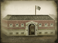

Basic Unit Statistics (can be modified by difficulty level, arts, skills, traits and retainers)
| Recruitment Cost | 840 | |
| Upkeep Cost | 110 | |
| Melee Attack | 4 | 11% |
| Charge Bonus | 10 | 20% |
| Bonus vs Cavalry | 0 | 0% |
| Range | 150 | 23% |
| Accuracy | 45 | 45% |
| Reloading Skill | 25 | 25% |
| Ammunition | 20 | 25% |
| Melee Defence | 2 | 5% |
| Armour | 2 | 13% |
| Morale | 6 | 12% |
Strengths & Weaknesses
- Good accuracy but average reload rate.
- Long range.
- Weak in melee.
- Weak against cavalry.
- Good morale.
Abilities
- Suppression Fire - This ability increases reload rate but lowers accuracy. Enemy units hit by suppression fire are slowed and suffer a morale penalty.
Requires
- Buildings: 
Description
A few bullets, in the right targets, can turn the course of battle.
Sharpshooters are best employed to protect the flanks of an army, and to specifically target dangerous enemy units from a safe, for them at least, distance. They are armed with very accurate rifles, and can shoot targets at very long range. Anyone hit is almost certain to be taken out of the fight. They are right to consider themselves a cut above ordinary infantrymen, and this attitude gives them good morale. However, due to their low numbers, they can be vulnerable to being swamped by enemy units in close combat, or ridden down by cavalry. A wise commander keeps them out of such immediate dangers as much as possible. Many European armies had employed skirmishers, often armed with rifles, from the Napoleonic Wars onwards. Referred to as "rifles" or as some variant of "hunters" such as "chasseurs" or "jaegers", these men were often elites within their respective army. They were selected on the basis of intelligence and resourcefulness, and often because of a background as poachers or gamekeepers! During the American Civil War units of sharpshooters were raised from among "back country boys" who relied on their skill to feed their families in times of peace. Sharpshooters, whatever they were called, were not expected to fight in open battle in the normal way of things, but to pick off officers and leaders among the enemy ranks. As technology and weaponry improved and telescopic sights became available, their ability to plunge enemy units into disarray grew too. Individual snipers were limited only by the mechanical reliability and quality of their guns, something that came as a terrible shock to many officers supposedly safe behind the lines!